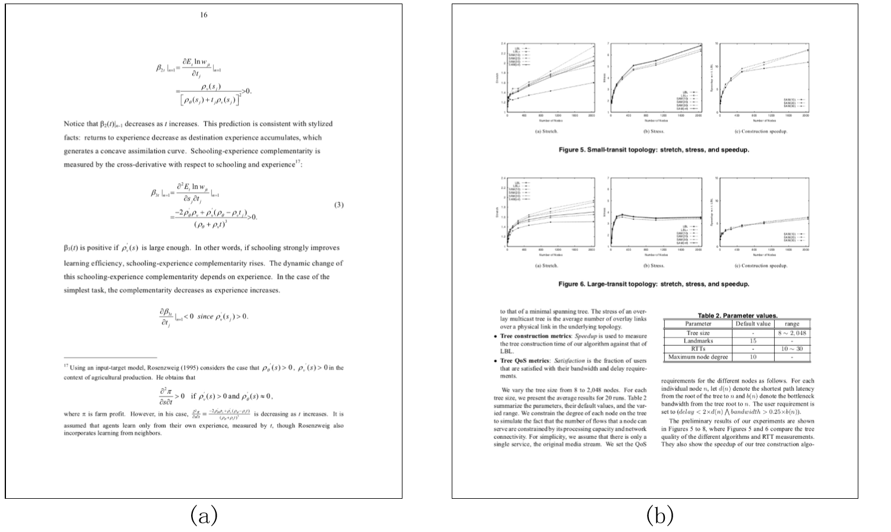
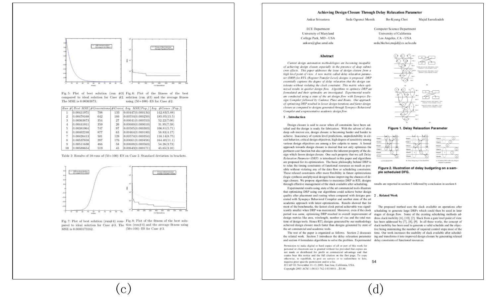
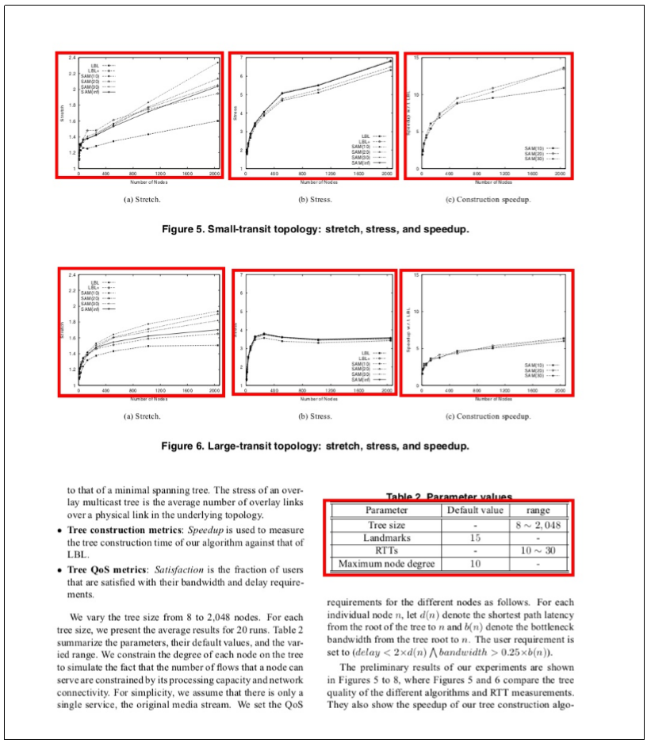
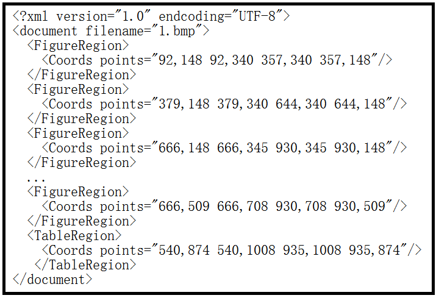

Dataset
(2022/9/1) Notice: A novel supplement dataset version is published in ICDAR2017_POD_dataset_supplement, which includes annotations for table structure recognition, from Prof. Cheng-Lin Liu's Group, Institute of Automation, Chinese Academy of Sciences. Thank Cheng-Lin Liu's Group for their helpful contributions!
Overview
The competition dataset consists of 2000 English document page images selected from 1500 scientic papers of CiteSeer. The dataset shows good variety in both page layout styles and object styles, including single-column pages, two-column pages, multi-column pages and various kinds of formulas, tables, graphics and figures. Fig.1 shows a few page examples.


Fig. 1. Examples of the page images of the dataset
In the dataset, each page image is accompanied by a XML file containing its ground truth describing the three kinds of objects to be detected: formulas, tables and figures or images(including charts).
Annotation format
The annotations refers to the PAGE Format. Object regions are defined as rectangular areas of a given page by their coordinates. For each sub-task, entrants are required to return its rectangular bounding-box in image coordinates. The origin coordinate is at the upper left corner of the document page image. Fig.2 illustrates the exact format of the ground truth XML file of the formulas corresponding to the page image in Fig.1 (b). Each tag represents one detected region in the corresponding page image. The kinds of regions are set to FormulaRegion, TableRegion and FigureRegion according to the class of the detected area. Note that multiline formulas are composed of several formula lines and a table can span more than one column, participants should merge the blocks that belongs to one logical object in a page, as shown in Fig.2. More specically, embedded formulas(tiny formulas contained in a text line) are regarded as a part of the text line. Only isolated formulas are included in the ground truth. And the caption of a table or a graphic is regarded as text line. The detected regions of tables and figures should not include its caption areas.


Fig. 2. page image and the corresponding ground truth file
For any questions, please contact chlxyd@pku.edu.cn.